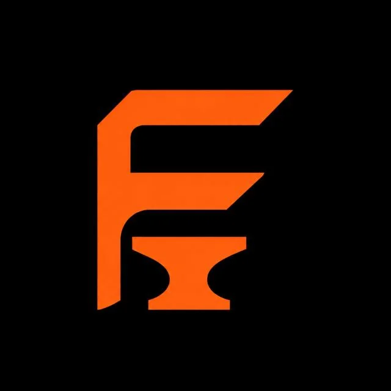
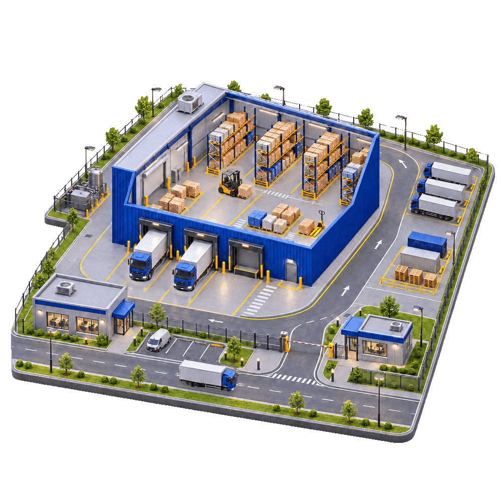

ONDE DÓI?
Que etapa mais gera retrabalho, atraso ou decisão de última hora?

THE FOUNDRY / PESQUISA EM CAMPOUm encontro para aprender com quem opera logística de verdade, testar nossas suposições e descobrir onde vale a pena investigar mais.

Pelo material público da Enviagora, já existem integrações e visibilidade operacional. Nossa pergunta começa depois disso.
Queremos exemplos concretos, inclusive daqueles problemas que parecem pequenos, mas consomem tempo toda semana.
Que etapa mais gera retrabalho, atraso ou decisão de última hora?
Quem percebe um problema primeiro? Qual sistema ou pessoa dá o alerta?
O impacto aparece em horas, frete, erro de pedido ou experiência do cliente?
Quando depende de outra empresa, como vocês chegam à resposta?
Uma única entrega. Várias empresas. Cada sistema pode contar uma parte diferente da história.
Uma hipótese: reunir os acontecimentos de cada etapa sem exigir que as empresas abandonem suas ferramentas.
Antes da tese de integração, estudamos simular a operação de um centro de distribuição para testar alternativas diante de imprevistos.